Solusi Alih Daya Terkemuka,
Efisien & Berorientasi Hasil.
PT Eterno Ventura Farrelindo menghadirkan tata kelola tenaga kerja profesional, transparan, dan terintegrasi untuk mendukung produktivitas instansi pemerintah dan korporasi swasta secara berkelanjutan.
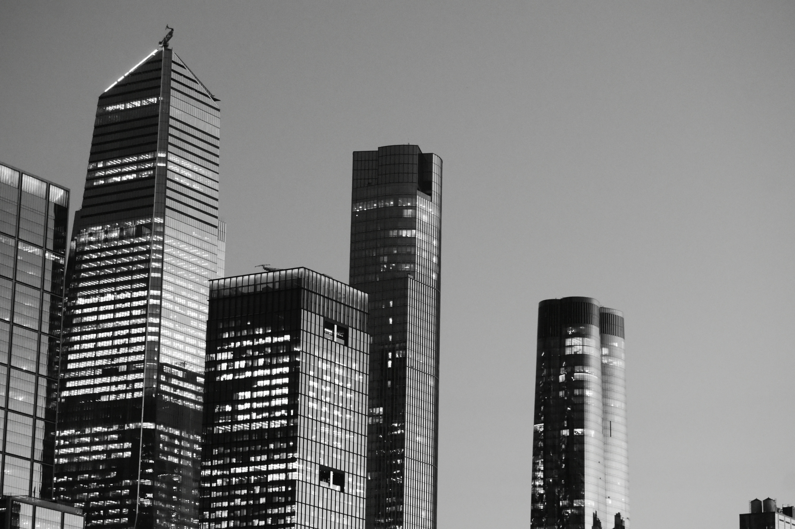
Mitra Alih Daya yang Menjawab Kebutuhan Pasar Modern
PT. Eterno Ventura Farrelindo adalah entitas korporasi yang bergerak di bidang penyediaan jasa Alih Daya (Outsourcing) berbasis balas jasa (fee) maupun sistem kontrak terpadu.
Kami hadir untuk menjawab dinamika kebutuhan instansi pemerintah dan perusahaan swasta dengan pendekatan yang profesional, efisien, dan berorientasi pada pencapaian hasil terukur. Didukung oleh manajemen berpengalaman dan komitmen tinggi terhadap mutu layanan, kami senantiasa menjadi mitra strategis yang diandalkan.
Visi Perusahaan
Menjadi perusahaan jasa Alih Daya terkemuka yang dapat diandalkan, adaptif terhadap perkembangan zaman, dan berkontribusi nyata dalam mendukung kebutuhan mitra kerja secara berkelanjutan.
Misi Perusahaan
- Menyediakan layanan dan produk berkualitas tinggi dengan standar profesionalisme yang konsisten.
- Menjalin hubungan kerja yang kuat dan saling menguntungkan dengan klien melalui komunikasi terbuka dan pelayanan responsif.
- Memberikan nilai tambah bagi klien melalui pendekatan kerja berbasis kepercayaan, ketepatan waktu, dan hasil yang terukur.
Penyediaan Tenaga Alih Daya Terpadu
Solusi komprehensif penempatan tenaga kerja terampil dengan standar kualifikasi ketat, pengawasan terarah, dan kepatuhan penuh terhadap regulasi.
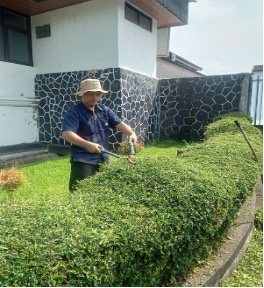
Cleaning Service
Pemeliharaan kebersihan harian gedung kantor, area publik, koridor, ruang rapat, dan toilet dengan sanitasi higienis berstandar industri.
- Checklist harian per zona kerja
- Peralatan & chemical ramah lingkungan
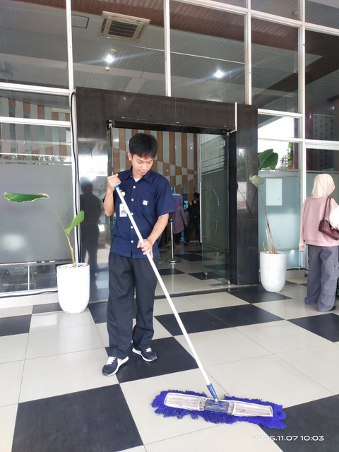
Pramubakti & Pramusaji
Tenaga pendukung operasional kantor, penyiapan ruang rapat, serta layanan jamuan dinas dengan etika pelayanan prima (service excellence).
- Penampilan rapi, ramah & sigap
- Kesiapan logistik ruang rapat harian
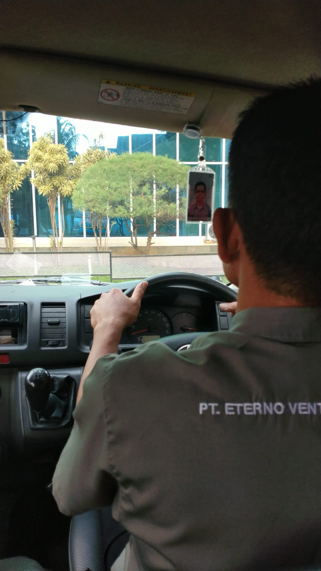
Driver Operasional
Pengemudi profesional berlisensi resmi, memahami rute jalan secara mendalam, serta menjunjung tinggi keselamatan berkendara (defensive driving).
- Ketepatan waktu & disiplin tinggi
- Perawatan berkala armada kendaraan
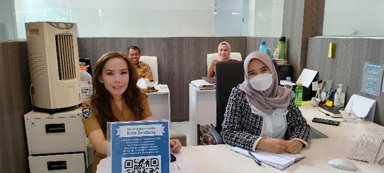
Tenaga Administrasi
Staf administrasi perkantoran yang terampil mengoperasikan komputer, korespondensi dinas, pengarsipan dokumen fisik/digital, dan entry data terstruktur.
- Mahir Microsoft Office & G-Suite
- Manajemen kearsipan rapi & akurat

Gardener & Lanskap
Pemeliharaan rutin lanskap luar ruang, pemangkasan rumput, pemupukan tanaman, dan penataan area hijau perkantoran agar senantiasa asri dan tertata.
- Penguasaan perawatan vegetasi tropis
- Kebersihan & estetika area luar ruang
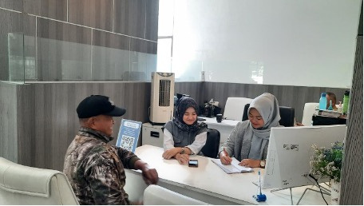
Front Office & Resepsionis
Penerimaan tamu dinas, registrasi kunjungan, tata kelola panggilan telepon resmi, dan pusat informasi kantor dengan tutur bahasa santun dan representatif.
- Standar 5S (Senyum, Sapa, Salam, Sopan, Santun)
- Penanganan komunikasi korporat profesional
Mengapa Memilih PT Eterno Ventura Farrelindo?
Standar integritas tinggi dan tata kelola operasional yang terbukti memberikan efisiensi nyata bagi seluruh mitra kerja.
SDM Profesional
Tenaga kerja melalui seleksi ketat, verifikasi latar belakang, dan pelatihan keterampilan berkala sebelum ditempatkan pada instansi klien.
Sistem Terintegrasi
Manajemen absensi digital, penggajian (payroll), serta pelaporan performa operasional dikelola dalam satu kesatuan sistem yang transparan.
Respons Cepat & Sigap
Jaminan penggantian (replacement) atau penambahan personil secara cepat dan tanggap tanpa mengganggu kelancaran operasional kerja klien.
Pengawasan 24 Jam
Koordinator lapangan (field supervisor) secara aktif memantau disiplin dan standar eksekusi tugas personil di setiap lokasi penempatan.
Evaluasi Berkala
Audit mutu layanan berkala dan evaluasi kepatuhan SLA (Service Level Agreement) sebagai landasan perbaikan kinerja secara berkesinambungan.
Customer Service Responsif
Kanal komunikasi langsung yang siap merespons kebutuhan mendesak, masukan, maupun koordinasi strategis kapan pun dibutuhkan oleh mitra kerja.
Kebijakan QHSE & Standar Operasional
Penerapan Quality, Health, Safety & Environment sebagai pondasi utama perlindungan ketenagakerjaan dan jaminan kualitas pekerjaan.
Kebijakan QHSE
SOP Keselamatan Kerja
Prosedur kerja aman yang baku, dipahami, dan dijalankan dengan disiplin oleh seluruh tenaga lapangan.
Sistem Pengawasan Kualitas
Pengawasan rutin terhadap mutu pekerjaan dan kepatuhan terhadap standar layanan (service agreement).
Pelaporan dan Evaluasi
Laporan berkala dan evaluasi kinerja sebagai dasar perbaikan layanan yang berkesinambungan.
SOP Pelayanan Outsourcing
SOP Cleaning Service
Jadwal kerja terperinci, standar kebersihan per zona, dan checklist harian per area kerja.
SOP Driver
Prosedur keselamatan berkendara (defensive driving), perawatan berkala armada, dan ketepatan waktu rute.
SOP Front Office
Standar penerimaan tamu resmi, etika komunikasi korporat, dan penanganan permintaan klien secara santun.
SOP Tenaga Supporting
Panduan kerja operasional untuk seluruh posisi pendukung sesuai mandat kontrak klien.
Portofolio Pengadaan & Klien Pemerintah
19 paket pekerjaan terverifikasi sepanjang tahun 2025 di berbagai instansi pemerintah daerah di Jawa Barat.
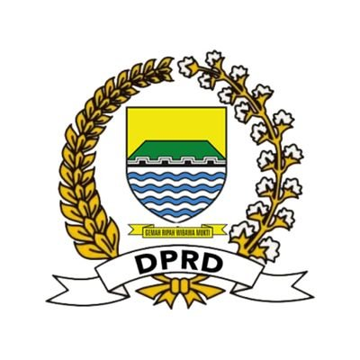
Sekretariat DPRD Kota Bandung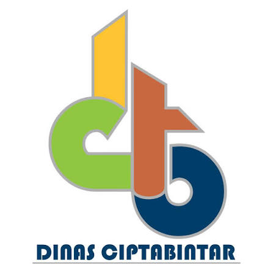
Dinas Cipta Karya Kota Bandung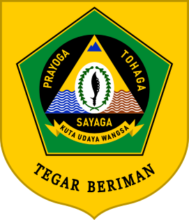
Bapenda Kab. Bogor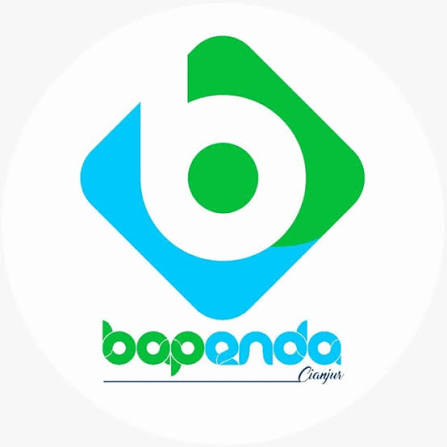
Bapenda Kab. Cianjur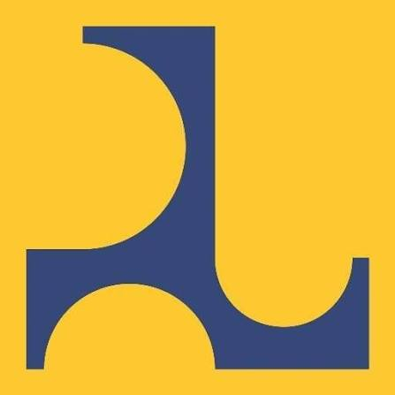
Dinas Bina Marga Kota Sukabumi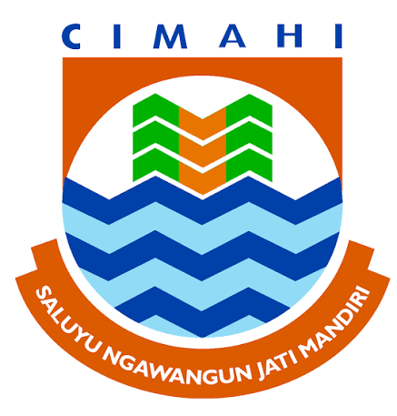
BPSDM Kota Cimahi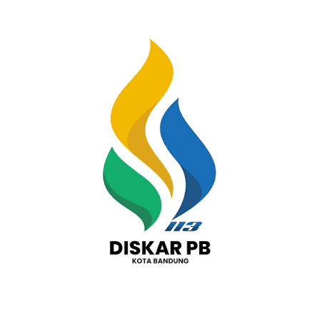
Diskar PB Kota Bandung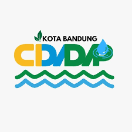
Kecamatan Cidadap Kota Bandung| No | Nama Paket Pekerjaan | Nama Pemberi Tugas (Klien) | Waktu Pelaksanaan |
|---|
Aktivitas & Pengawasan Lapangan
Dokumentasi nyata dedikasi personil PT Eterno Ventura Farrelindo dalam melaksanakan tugas di berbagai instansi mitra.
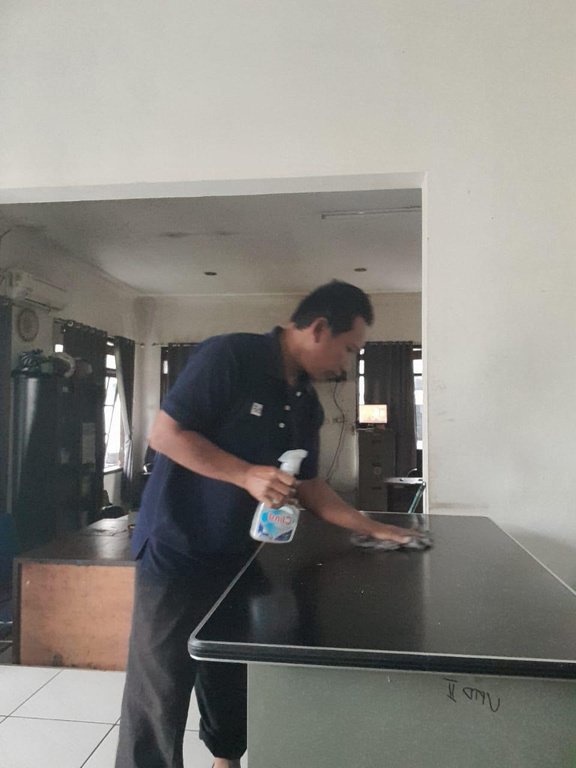
3 Foto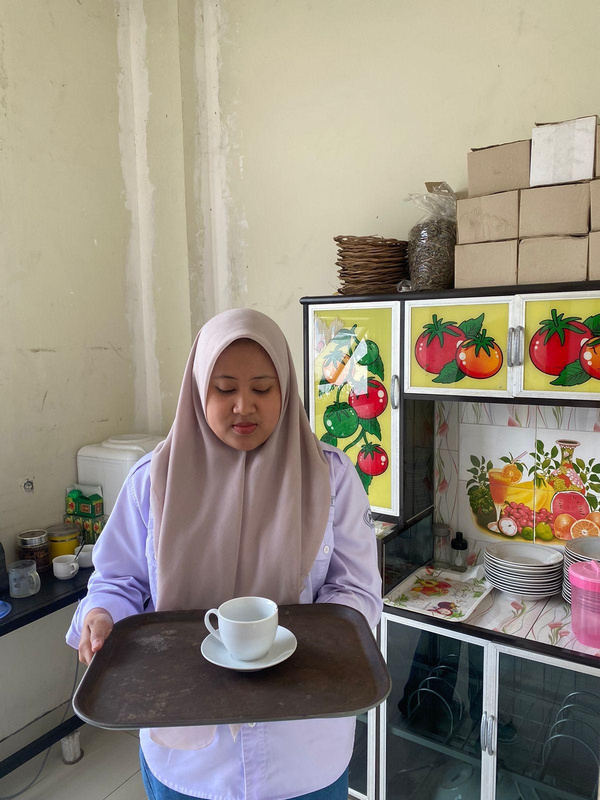
2 Foto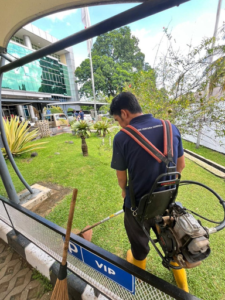
2 Foto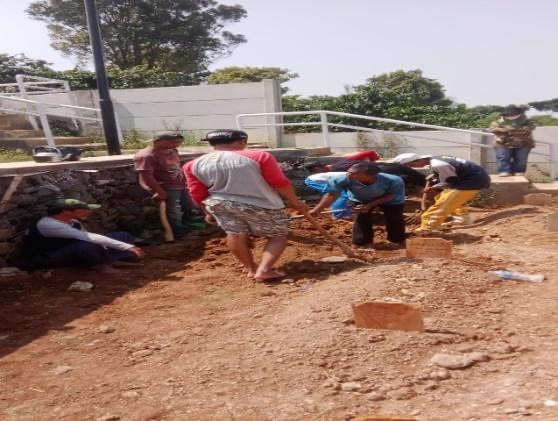
6 Foto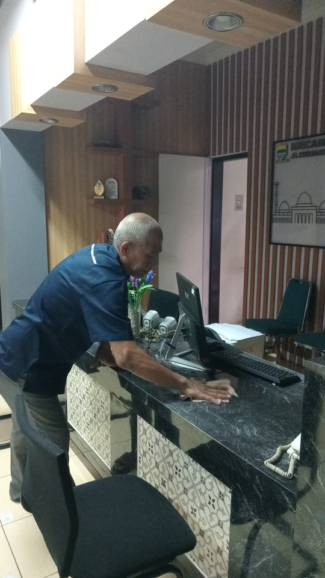
3 FotoDokumen Legalitas & Sertifikasi
Transparansi perizinan lengkap dan kepatuhan mutlak terhadap seluruh peraturan ketenagakerjaan Republik Indonesia.
Penyedia Resmi INAPROC
Terdaftar dalam Sistem Informasi Pengadaan Pemerintah (e-Katalog LKPP) untuk kemudahan transaksi pengadaan instansi.
Siap Menjadi Mitra Alih Daya Terpercaya Anda
Diskusikan kebutuhan tenaga kerja instansi atau perusahaan Anda bersama kami. Dapatkan konsultasi teknis dan simulasi perhitungan RAB yang akurat dan transparan.
Kantor Operasional
Jl. Palasari No. 18, Kel. Malabar, Kec. Lengkong, Kota Bandung, Jawa Barat 40262
Telepon / WhatsApp Business
Email Resmi
Formulir Permintaan Penawaran
Struktur Organisasi & Manajemen
Dipimpin oleh jajaran profesional berdedikasi tinggi dalam menjamin tata kelola perusahaan yang berintegritas.
Athaya Farrel Z.A.A.
S.M., BiM., M.Sc.
Direktur UtamaMikail Ibrahim Moussa
S.Ak.
DirekturFauzi Rizki Sutarsa
Operasional
Windy Meta Novia
Administrasi